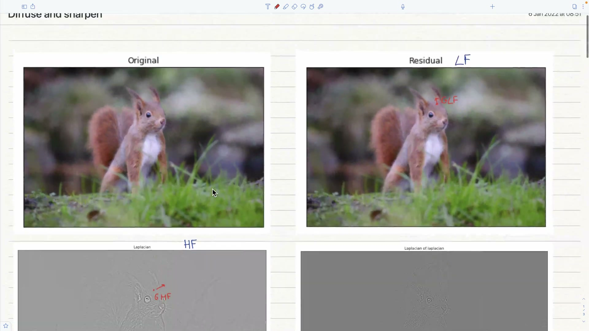
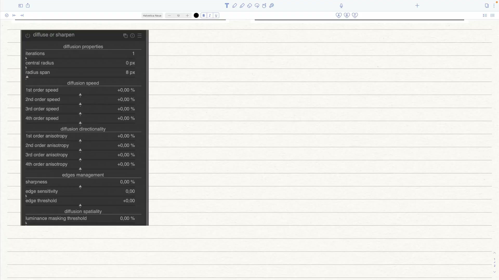
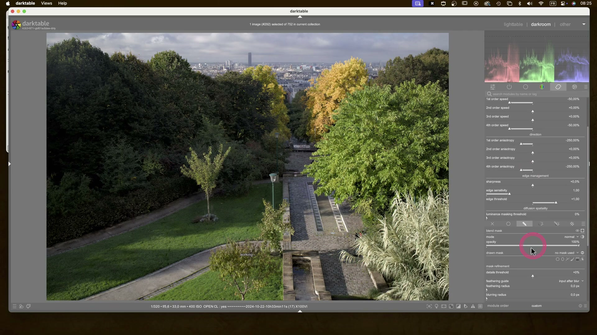

Diffuse or Sharpen (Diffondi o Nitidezza)¶
Il modulo Diffuse or Sharpen e' uno degli strumenti piu' potenti e complessi di darktable. Implementa un modello fisico generalizzato di diffusione -- un'equazione differenziale parziale anisotropa e multiscala -- per simulare o annullare processi diffusivi reali.[^manual]
A differenza dei tradizionali sharpening che aggiungono aloni artificiosi, questo modulo lavora con le leggi fisiche della diffusione delle particelle, rendendolo adatto sia per recuperare nitidezza ottica perduta sia per creare effetti creativi come bloom, acquerello e inpainting.[^manual]
Risorse computazionali
Questo modulo e' estremamente esigente. E' un risolutore di equazioni differenziali parziali anisotropo e multiscala. Il tempo di esecuzione cresce con il numero di iterazioni. L'uso di OpenCL e' fortemente raccomandato.[^manual]
Cos'e' la diffusione¶
La diffusione e' un processo fisico attraverso il quale le particelle si muovono e si distribuiscono gradualmente nel tempo, da una sorgente che le genera. Nell'elaborazione delle immagini, la diffusione si verifica principalmente in due contesti:[^manual]
- Diffusione dei fotoni attraverso il vetro delle lenti (sfocatura) o l'aria umida (foschia)
- Diffusione dei pigmenti in inchiostri bagnati o acquerelli
In entrambi i casi, la diffusione rende l'immagine meno nitida facendo "colare" le particelle e livellando le variazioni locali. Il modulo puo' sia simulare che annullare questi processi.[^manual]
Cosa si puo' rimuovere (annullare la diffusione)¶
| Problema | Preset consigliato |
|---|---|
| Filtro anti-aliasing del sensore / sfocatura del demosaicing | Sharpen demosaicing |
| Sfocatura statica dell'obiettivo | Lens deblur |
| Foschia atmosferica | Dehaze |
| Mancanza di contrasto locale | Local contrast |
Cosa si puo' aggiungere (simulare la diffusione)¶
| Effetto | Preset consigliato |
|---|---|
| Bloom / effetto Orton | Bloom |
| Inpainting di aree danneggiate | Inpaint highlights |
| Denoising edge-preserving | Denoise |
| Surface blur | Surface blur |
| Simulazione acquerello / disegno a linea | Simulate watercolor / line drawing |
Sfocatura di movimento
Le sfocature da movimento non possono essere annullate con questo modulo, perche' non sono di natura diffusiva.[^manual]
Concetti fondamentali¶
Tempo (iterazioni)¶
La diffusione e' un processo dipendente dal tempo: piu' tempo ha, piu' le particelle possono diffondersi. In questo modulo, il tempo viene simulato tramite il numero di iterazioni -- quante volte l'algoritmo viene eseguito su se stesso.[^manual]
- Piu' iterazioni = ricostruzione piu' accurata (deblurring, denoising, dehazing)
- Troppe iterazioni con parametri scorretti = degenerazione della soluzione
- Le iterazioni sono il fattore che piu' impatta sulle prestazioni
Direzione¶
La diffusione naturale avviene dai punti ad alto potenziale (pixel luminosi) verso quelli a basso potenziale (pixel scuri). Questa implementazione offre tre modalita:[^manual]
| Direzione | Comportamento |
|---|---|
| Isotropa (anisotropia = 0) | Tutte le direzioni hanno lo stesso peso, come la diffusione del calore |
| Parallela al gradiente (anisotropia positiva) | Diffusione attraverso i bordi degli oggetti, crea bordi fantasma |
| Perpendicolare al gradiente / isofota (anisotropia negativa) | Diffusione contenuta dentro i bordi, come una goccia d'acquerello |
Velocita'¶
La velocita' di diffusione determina quanto rapidamente le particelle si muovono. Per la ricostruzione (deblurring, denoising, dehazing) e' consigliabile usare velocita' ridotte per evitare overshoot numerici.[^manual]
Tutte le velocita' si sommano. Le somme 1° ordine + 2° ordine e 3° ordine + 4° ordine non dovrebbero mai superare +/-100%, a meno che non si voglia produrre glitch art.[^manual]
Scala¶
La diffusione naturale coinvolge solo i 9 pixel vicini. Questa implementazione usa lo schema wavelet multiscala del Contrast Equalizer per diffondere a diverse scale, definite da central_radius e radius_span.[^manual]
Controlli del modulo¶
Proprieta'¶
| Parametro | Descrizione |
|---|---|
| iterations | Numero di esecuzioni dell'algoritmo. Valori alti rallentano il modulo ma permettono ricostruzioni piu' accurate (se le velocita' sono sufficientemente basse) |
| central_radius | Scala principale della diffusione. Zero = agisce sui dettagli fini (deblurring, denoising). Valori non-zero = dimensione dei dettagli da diffondere (contrasto locale) |
| radius_span | Banda di dettagli su cui agire, attorno al raggio centrale. Per il deblur: circa la larghezza della sfocatura dell'obiettivo. Per il contrasto locale: 3/4 del raggio centrale massimo |
Nota tecnica
I raggi sono espressi in pixel dell'immagine a piena risoluzione. Copiare+incollare le impostazioni tra immagini di diversa risoluzione puo' produrre risultati leggermente diversi, eccetto per la nitidezza a livello di pixel.[^manual]
Per gli ingegneri elettrici: quanto si configura qui e' un filtro passa-banda nello spazio wavelet, usando una finestra frequenziale gaussiana centrata su central_radius con decadimento (radius_span).[^manual]
Velocita' (Sharpen ↔ Diffuse)¶
Valori positivi = applicano diffusione (sfocano). Valori negativi = annullano la diffusione (nitidezza). Zero = nessun effetto.[^manual]
| Parametro | Agisce su | Direzione |
|---|---|---|
| 1st order speed (gradient) | Basse frequenze wavelet | Definita da 1st order anisotropy |
| 2nd order speed (laplacian) | Basse frequenze wavelet | Definita da 2nd order anisotropy |
| 3rd order speed (gradient of laplacian) | Alte frequenze wavelet | Definita da 3rd order anisotropy |
| 4th order speed (laplacian of laplacian) | Alte frequenze wavelet | Definita da 4th order anisotropy |
Direzione (Anisotropia)¶
Valori positivi = la diffusione evita i bordi (isofote). Valori negativi = la diffusione segue i gradienti. Zero = isotropa (entrambe le direzioni uguali).[^manual]
| Parametro | Direzione relativa a |
|---|---|
| 1st order anisotropy | Gradiente delle basse frequenze |
| 2nd order anisotropy | Gradiente delle alte frequenze |
| 3rd order anisotropy | Gradiente delle basse frequenze |
| 4th order anisotropy | Gradiente delle alte frequenze |
Gestione dei bordi¶
| Parametro | Descrizione |
|---|---|
| sharpness | Guadagno sui dettagli wavelet indipendentemente dagli altri parametri. Utile come variabile di regolazione durante il bloom per mantenere nitidezza. Sconsigliato per il solo sharpening (causa aloni e frange) |
| edge sensitivity | Penalizza le velocita' di diffusione dove vengono rilevati bordi (varianza locale). Zero = disabilitata. Valori piu' alti = penalizzazione piu' forte. Aumentare se si notano artefact come frange e aloni |
| edge threshold | Soglia di varianza che influenza soprattutto le aree a bassa varianza (scure, sfocate o piatte). Positivo = piu' penalita' per aree basse (buono per sharpening/contrasto locale senza schiacciare i neri). Negativo = meno penalita' (buono per denoising/blur) |
Spazialita' della diffusione¶
| Parametro | Descrizione |
|---|---|
| luminance masking threshold | Sopra lo 0%, la diffusione avviene solo nelle regioni con luminanza superiore a questo valore. Utile per l'inpainting degli highlights (viene aggiunto rumore gaussiano per simulare le particelle) |
Preset spiegati¶
Sharpen sensor demosaicing¶
Scopo: Compensare la perdita di nitidezza causata dal filtro anti-aliasing (LPF) del sensore e dagli algoritmi di demosaicing.[^manual]
Posizionamento nella pipeline: Spostare questo modulo prima del modulo input color profile nella pixelpipe.[^manual]
Caratteristiche tipiche:
- central_radius = 0 px (agisce a livello di pixel)
- radius_span = ridotto
- Velocita' negative (annullano la diffusione)
- Anisotropia elevata per preservare i bordi
Capture sharpening alternativo
Per la nitidezza di cattura, attivare anche il modulo Demosaic con capture sharpening all'inizio della pipeline. Regolare la contrast sensitivity per non accentuare il rumore.[^denoise]
Lens deblur¶
Scopo: Recuperare una messa a fuoco leggermente morbida causata da sfocatura statica dell'obiettivo.[^manual]
Parametri chiave:
- radius_span ≈ larghezza della sfocatura dell'obiettivo
- central_radius = 0 px
- Piu' iterazioni per sfocature ampie
- Velocita' moderate per evitare degenerazione
Regolazione dell'effetto
Se l'effetto sembra troppo forte, diminuire le iterazioni. Se compaiono artefact ai bordi, aumentare la edge sensitivity. Se il deblur influenza aree sfocate valide (bokeh), ridurre il raggio.[^manual]
Local contrast¶
Scopo: Aumentare il contrasto locale con un approccio fisico, simile al Contrast Equalizer ma nello spazio RGB scene-referred.[^manual]
Caratteristiche tipiche:
- central_radius non-zero (definisce la scala del contrasto locale)
- radius_span = 3/4 del raggio centrale massimo
- Velocita' negative per accentuare i dettagli
- Anisotropia elevata (es. +200% al 1° e 3° ordine) per guidare la diffusione lungo le direzioni legittime dei bordi reali
Preservare i neri
Quando il contrasto locale "mangia" i neri, usare edge_threshold positivo e una maschera parametrica per escludere le zone molto scure. Nel workflow B/N di street photography, il narratore usa una maschera parametrica su Jz con emphasize mask per proteggere le ombre profonde.[^street-bw]

Dehaze¶
Scopo: Rimuovere foschia e nebbia atmosferica.[^manual]
Parametri tipici dal workflow reale:
- iterations = 1 (minimo sufficiente)
- central_radius = 0 px
- radius_span = 4 px (ridotto, agisce sui dettagli fini)
- Velocita' = -25% su tutti gli ordini
- Anisotropia = +100% su tutti gli ordini (diffusione contenuta nei bordi)
- edge_sensitivity = 1.0
Dehaze al posto dell'high-pass
Usare il preset dehaze in Diffuse or Sharpen invece del tradizionale filtro high-pass. Offre nitidezza piu' pulita ed evita i bordi neri indesiderati tipici dell'approccio high-pass.[^dragan]

Bloom¶
Scopo: Creare un bagliore morbido sulle alte luci, simile all'effetto Orton.[^manual]
Parametri tipici dal workflow reale:
- iterations = 1
- central_radius = 0 px
- radius_span = 32 px
- Velocita' = +50% su tutti gli ordini (valori positivi = diffusione, non sharpening)
- Anisotropia = 0% (isotropa, tutte le direzioni uguali)
Esempio pratico: ammorbidire il cielo
Nel tutorial di street photography B/N, il narratore applica il bloom al cielo usando una maschera disegnata a mano per delimitare l'area. Le speed positive (+50%) creano una diffusione morbida che attenua i contorni del cielo, riducendo la distrazione visiva.[^street-bw]

Attenzione ai preset
Applicare un preset sovrascrive le impostazioni ma puo' causare la perdita delle maschere precedentemente create. Ricrearle dopo l'applicazione del preset.[^street-bw]
Quando usare Diffuse or Sharpen vs altri moduli¶
| Esigenza | Modulo consigliato | Perche' |
|---|---|---|
| Nitidezza di cattura (demosaicing) | Demosaic (capture sharpening) | Piu' leggero, integrato nel demosaicing[^denoise] |
| Nitidezza per scale wavelet | Contrast Equalizer | Stesso approccio wavelet, interfaccia piu' intuitiva[^manual] |
| Contrasto locale rapido | Local Contrast | Piu' veloce, anche se piu' sottile -- ideale nel workflow lowlight[^lowlight] |
| Nitidezza fisica multiscala / Dehaze / Bloom | Diffuse or Sharpen | Unico con modello fisico, adatto a tutti questi usi[^manual] |
| Nitidezza semplice e veloce | Sharpen (modulo base) | Leggero, ma senza controllo multiscala o edge-aware[^manual] |
Alternativa veloce
Il modulo Local Contrast e' piu' veloce di Diffuse or Sharpen, anche se piu' sottile. Preferirlo nel workflow lowlight quando le prestazioni sono priorita'.[^lowlight]
Workflow consigliato¶
Ordine delle istanze multiple¶
Quando piu' problemi ottici affliggono la stessa immagine, usare istanze multiple del modulo, ordinate dalla scala piu' grande alla piu' piccola:[^manual]
- Denoise (sempre prima di tutto)
- Miglioramento del contrasto locale
- Dehaze
- Correzione sfocatura obiettivo
- Correzione sensore e demosaicing
Partire dalle ricostruzioni a scala piu' grande riduce la probabilita' di introdurre o amplificare il rumore durante le ricostruzioni a scala piu' fine. Questo e' controintuitivo perche' questi processi non avvengono in questo ordine durante la formazione dell'immagine.[^manual]
Regola d'oro
Il denoising deve sempre avvenire prima di qualsiasi tentativo di sharpening o aumento dell'acutanza.[^manual]
Procedura operativa da zero¶
I parametri predefiniti del modulo sono completamente neutri e non fanno nulla all'immagine. Lo spirito del modulo e' che ogni ordine influenza la texture in modo specifico:[^manual]
- Regolare il 1° ordine (speed e anisotropia) per ottenere una base iniziale. Poi aggiustare il raggio. Questo influenza le texture piu' grossolane
- Regolare il 2° ordine (speed e anisotropy). Agisce sulle basse frequenze ma segue il gradiente delle alte frequenze (nitidezza o rumore). Utile per ridurre il rumore quando si usa il 1° ordine in modalita' sharpening
- Regolare la edge sensitivity per eliminare artefact ai bordi. La diffusione in direzione isofota non e' sufficiente quando sono presenti spigoli e forme convesse acute
- Aumentare le iterazioni per compensare l'ammorbidimento risultante. Se non si puo', aumentare la velocita' di diffusione
- Regolare il 3° e 4° ordine per le alte frequenze. Essere molto piu' delicati: possono far esplodere il rumore rapidamente
- Fine-tuning dello sharpness per il gusto personale
Partire dai preset
L'approccio piu' semplice e' partire dai preset del developer e poi modificarli: diminuire le iterazioni se l'effetto e' troppo forte, aumentare la edge sensitivity se compaiono artefact.[^manual]
Esempio: contrasto locale con maschera parametrica¶
Dal workflow di street photography B/N analizzato nei video:[^street-bw]
- Applicare il preset local contrast (high frequency)
- Impostare:
iterations= 15,central_radius= 0,radius_span= 512 - Velocita': 1st = -20%, 2nd = +10%, 3rd = -20%, 4th = +20%
- Anisotropia: 1st = +210%, 3rd = +250%, 2nd e 4th = 0%
edge_sensitivity= 1.0,edge_threshold= +0.30- Aggiungere una maschera parametrica su luminanza (Jz) per escludere i neri profondi
- Usare
emphasize masknella maschera parametrica per proteggere le ombre
Consigli pratici dai video tutorial¶
Street photography B/N¶
Nel tutorial completo di street photography in bianco e nero, il modulo viene usato in tre modi distinti:[^street-bw]
- Dehaze per aggiungere texture e contrasto locale al cappotto del soggetto (
central_radius= 0,radius_span= 4, speed = -25%, anisotropia = +100%) - Bloom sul cielo per ammorbidire e ridurre la distrazione visiva, con maschera disegnata a mano (speed = +50%, isotropo)
- Local contrast ad alta frequenza con maschera parametrica per escludere i neri (
radius_span= 512, 15 iterazioni, anisotropia elevata)

Limitazioni delle maschere colore
Non e' possibile creare una maschera basata sul colore quando il modulo Diffuse or Sharpen si trova sopra il modulo black and white nella pipeline -- il colore non e' ancora disponibile in quella posizione.[^street-bw]
Fotografia infrarossa¶
Nel workflow per infrarosso a falsi colori, il modulo viene utilizzato per recuperare dettagli dopo la conversione cromatica, in combinazione con Tone Equalizer Sky e maschere raster.[^ir-photo]
Precauzioni generali¶
Correggere prima le aberrazioni cromatiche
Se si intende deblurrare l'immagine, correggere prima le aberrazioni cromatiche e il rumore, perche' il deblurring puo' magnificare questi artefact. Assicurarsi di non avere pixel neri clippati (correggere con black level correction nel modulo Exposure).[^manual]
Posizionamento nella pipeline
Poiche' lavora su canali RGB separati, e' meglio applicare questo modulo dopo Color Calibration, partendo da un'immagine completamente neutra e con bilanciamento del bianco corretto.[^manual]
Sharpness percepita vs ottica
Il contrasto globale (curve tonali, livelli nero/bianco) influenza la percezione della nitidezza, che e' diversa dalla nitidezza ottica (risoluzione). L'occhio umano e' sensibile solo al contrasto locale. Se un tone mapping aumenta il contrasto, l'immagine apparira' piu' nitida -- ma i bordi reali non sono cambiati.[^manual]
Note sul giudizio della nitidezza¶
Non valutare a zoom 1:1
Valutare la nitidezza a zoom 1:1 (100%) o superiore e' un esercizio inutile. Nei musei, nelle mostre e persino a schermo, il pubblico guarda le immagini nel loro insieme, non con una lente d'ingrandimento. Nella maggior parte degli usi pratici, le fotografie raramente superano 3000x2000 pixel (circa 300 DPI in formato A4/Letter), che per sensori da 24 megapixel significa un downscaling di 4x. Esaminando un file da 24 MP a 1:1, si sta guardando un'immagine che non esistera' mai.[^manual]
Plausibile vs piacevole
Con l'invecchiamento si perde la capacita' visiva. La quantita' di sharpening che piace a chi ha 50 anni puo' essere diversa da chi ne ha 20. Considerare una nitidezza plausibile (che corrisponde alla percezione quotidiana) piuttosto che piacevole (che puo' sembrare buona solo a chi ha la stessa vista).[^manual]
Soft focus e poetica della morbidezza
Molte delle piu' grandi immagini della storia della fotografia sono state scattate con obiettivi lontani dall'essere nitidi come quelli odierni. La messa a fuoco morbida e un po' di sfocatura hanno meriti poetici che le immagini igienizzate in HD potrebbero non trasmettere.[^manual]
Riepilogo parametri per preset¶
| Parametro | Sharpen demosaic | Lens deblur | Local contrast | Dehaze | Bloom |
|---|---|---|---|---|---|
| iterations | variabili | medio-alte | 10-15 | 1 | 1 |
| central_radius | 0 px | 0 px | 0 px | 0 px | 0 px |
| radius_span | ridotto | ≈ blur lente | 512 px | 4 px | 32 px |
| 1st/2nd/3rd/4th speed | negativi | negativi | -20%/+10%/-20%/+20% | -25% tutti | +50% tutti |
| 1st/3rd anisotropy | elevata | elevata | +210%/+250% | +100% tutti | 0% (isotropo) |
| edge_sensitivity | medio-alta | medio-alta | 1.0-2.5 | 1.0 | 0.0 |
| edge_threshold | leggero positivo | positivo | +0.30 | 0.0 | 0.0 |
I valori sono indicativi e variano in base all'immagine. Partire sempre dai preset inclusi e regolare di conseguenza.[^manual]
Fonti¶
[^manual]: darktable User Manual -- Diffuse or Sharpen, docs.darktable.org | Copia locale: processed/darktable-usermanual-en/usermanual-48-en-module-reference-processing-modules-diffuse.md
[^street-bw]: Full B&W edits in darktable for street photography -- A Dabble in Photography
[^ir-photo]: Develop infrared photos with darktable -- A Dabble in Photography
[^denoise]: darktable pipeline for beginners -- A Dabble in Photography
[^lowlight]: Lowlight photos in darktable -- A Dabble in Photography
[^dragan]: The Dragan effect in darktable -- A Dabble in Photography